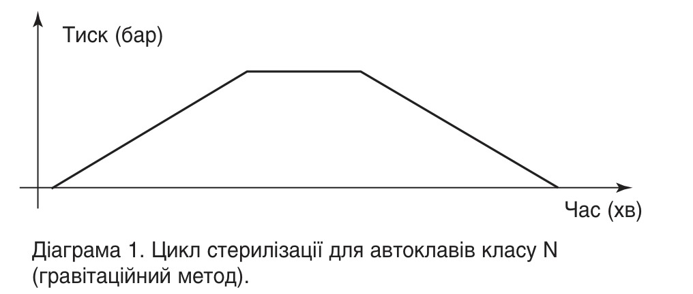
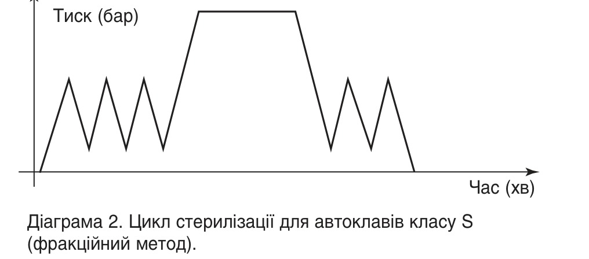
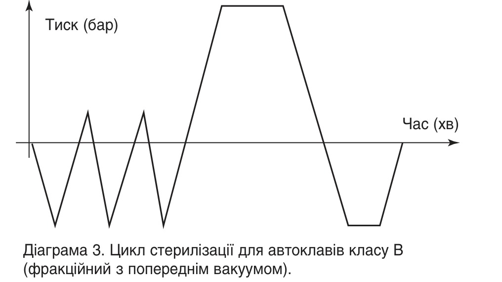

Досвід · журнал «ДентАрт» 2016 №4
Стерилізація інструментів у стоматологічній клініці
Спеціалісти знають, наскільки важливі, необхідні та трудомісткі дезінфекція, передстерилізаційне очищення і стерилізація інструментів у стоматологічній практиці. Поняття дезінфекції та стерилізації відомі давно. Це методи знешкодження або знищення мікроорганізмів.
Поняття стерилізації означає знищення всіх здатних до розмноження мікроорганізмів, особливо збудників хвороб з летальними наслідками. Тому важливо, щоб при стерилізації знищувалися спори мікроорганізмів. Дезінфекція використовується у тих випадках, коли неможлива стерилізація, наприклад, дезінфекція рук, стін, підлоги і т.п.
Наша клініка існує і успішно працює з 1995 року. Із самого початку роботи для нас було аксіомою: усі інструменти, призначені для хірургічного втручання або такі, що проколюють шкіру, мають бути піддані дезінфекції або стерилізації. Крім цього, обов'язковим стало проведення дезінфекції інструментарію одразу ж після його використання для того, щоб медичний персонал міг запобігти зараженню під час чищення.
Протягом восьми років наша клініка розширюється, удосконалюючи методи лікування, а разом з тим і способи стерилізації інструментів, і на початку перед нами постало питання: як найбільш ефективно та економічно вигідно стерилізувати весь інструмент та операційну білизну?
Сьогодні для стерилізації інструментів у медичній практиці широке розповсюдження отримали два способи: стерилізація сухим гарячим повітрям у сухожарових шафах і волога стерилізація гарячою парою в автоклавах (табл. 1). При стерилізації гарячим повітрям збудники хвороб знищуються високою температурою (180°C). При стерилізації гарячою парою збудники хвороб під тиском немовби розбухають і знищуються уже при 120°C. Обидва методи мають свої переваги та недоліки (табл. 2).
| Спосіб стерилізації | Температура | Тиск | Час впливу | Повний цикл |
|---|---|---|---|---|
| Стерилізація гарячим повітрям | 180°C | — | 30 хв | 75-120 хв |
| Стерилізація парою (інструменти) | 134°C | 2,1 бар | 5 хв | 6-30 хв |
| Стерилізація парою (текстиль) | 120°C | 1 бар | 20 хв | 50 хв |
Для молодої клініки на той час, на жаль, вирішальною виявилася невелика кількість переваг методу стерилізації гарячим повітрям. На початку ми відкрили два кабінети: в одному провадилася передопераційна підготовка пацієнтів — у першу зміну, імплантація і протезування — у другу; другий кабінет — стерилізаційна, де робилося ручне миття інструментів, замочування в дезінфікуючому розчині, промивання та стерилізація в сухожаровій шафі. Наконечники для стоматологічних установок обробляли, як і всюди, розчинами антисептиків.
| Спосіб стерилізації | Переваги | Недоліки |
|---|---|---|
| Гарячим повітрям (сухожарові шафи) | Відносно невелика вартість обладнання | «Довгий» повний цикл; небезпека пошкодження інструментів високими температурами; неможливість стерилізації термонестійких виробів (тканин і пластмас); небезпека довантаження при відчинянні дверцят шафи під час процесу; тільки один контрольований параметр (температура); відносно високі енерговитрати. |
| Парою (автоклави) | «Короткий» повний цикл; можливість стерилізації термонестійких матеріалів та виробів за нижчої температури; різноманітні види пакування (проста та подвійна упаковка, прозора упаковка і т.д.); безпека (неможливість відчиняння дверцят при виробничому процесі). | Вища вартість обладнання |
Незабаром стало зрозуміло, що ця процедура має безліч недоліків і потребує багато часу. Розчини для обробки треба було готувати, вони мали неприємний запах, а в сухожаровій шафі через високу температуру інструменти ставали непридатними для роботи. Крім того, простирадла, серветки та операційну білизну доводилося перевозити транспортом і автоклавувати в міській поліклініці, з якою ми уклали договір. Наша білизна стерилізувалася в громіздких автоклавах і часто залишалася вологою, що викликало дискомфорт у пацієнтів і персоналу.
Крок за кроком клініка розширювалася, оновлювалася, купувалося обладнання. Сьогодні у нас представлені всі стоматологічні спеціальності: є операційна, три лікувальних кабінети, два ортопедичних, кабінет художньої реставрації, кабінети гігієніста та ортодонта, зуботехнічна і ливарна лабораторії. Усі кабінети щоденно дають велику кількість використаних інструментів, котрі необхідно продезінфікувати та простерилізувати. Перед нами знову постало питання розширення та оновлення стерилізаційної.
Цього разу до організації стерилізаційних заходів у клініці ми підійшли з комплексних економічних позицій і задали собі лише одне питання: які технології використати для забезпечення безперебійного, якісного та економічно раціонального процесу стерилізації?
Від стерилізації гарячим повітрям (сухожарові шафи) ми вирішили відмовитися, оскільки високі температури та «довгі» цикли, з одного боку, псували інструмент і своєчасно не забезпечували наших потреб, а з другого боку, операційну білизну все одно доводилося обробляти у міській поліклініці. Враховуючи ці обставини, було вирішено перейти на інший спосіб стерилізації інструментів та білизни — автоклавування.
Ручна обробка та промивання інструментів дезінфікуючими розчинами, а також їхнє приготування займали у персоналу дуже багато часу. Стало зрозуміло, що слід автоматизувати цей процес. Треба було також істотно скоротити затрати часу і засобів на такі побічні процеси, як:
- ручна обробка інструментів;
- управління робочим циклом;
- контроль за рівнем і якістю дистильованої води;
- постачання дистильованої води.
Заміна сухожарових шаф на автоклави призводить до збільшення споживання дистильованої води. Зазвичай ми купували дистильовану воду в аптеках, але тепер зробили висновок, що при збільшенні обсягів її споживання зручнішим і дешевшим способом отримання дистильованої води буде організація власного виробництва.
У процесі роботи було помічено, яке полегшення і задоволення відчувають наші пацієнти, якщо в їхній присутності лікар розкриває упаковку зі стерильними інструментами, і тому було вирішено всі інструменти автоклавувати в упаковці, що дозволяло зберігати інструменти в стерильному вигляді і використовувати пізніше.
Таким чином, загальна схема стерилізації інструментів, котру ми збиралися втілити в життя, стала такою:
- Накопичення інструментів після використання
- Дезінфекція
- механічне очищення інструментів
- перевірка на пошкодження
- промивання інструментів
- сушіння
- укладання в стерилізаційну упаковку
- Стерилізація
- стерильне зберігання / застосування
Наступним етапом став пошук виробника стерилізаційного обладнання, модельний ряд якого забезпечив би обрану нами схему стерилізації, а також можливість її подальшого розвитку. Рішення було прийнято випадково — на стоматологічній виставці «Dental Expo 2000» ми побачили, а потім придбали невеликий напівавтоматичний автоклав об'ємом 19 літрів фірми MELAG (Німеччина) і апарат для стерильної упаковки інструменту тої ж фірми. Чому обрали саме цього виробника? Річ у тім, що за всієї складності технологічних процесів, які реалізують апарати цієї фірми, вони виявилися дуже простими в управлінні і, як засвідчила практика, вельми надійними в експлуатації.
Як уже зазначалося, для стерилізації парою автоклави використовують дистильовану воду високої якості, яку необхідно постійно оновлювати для уникнення пошкодження інструментів або самого автоклава. У випадку, якщо якість дистильованої води низька, забруднюючі частинки будуть осідати на інструментах (незалежно від того, упаковані чи ні предмети, що стерилізуються). Тому нашим наступним кроком стало придбання дистилятора вже відомої нам фірми MELAG, серед іншого ми керувалися зручністю сервісного обслуговування всіх видів обладнання однією фірмою.
Ураховуючи ту кількість стерильних інструментів і текстильних матеріалів, якої потребувала клініка, ми зважилися на ще один крок у розвитку стерилізаційного відділення — придбання другого автоклава. Для цього потрібен був апарат, який, маючи мінімальний за тривалістю виробничий цикл, міг би ефективно і якісно стерилізувати всі види інструментів і текстильних матеріалів, незалежно від виду упаковки, а також витримувати одноразові великі завантаження або роботу в безперебійному режимі протягом певного часу. Крім того, піклуючись про майбутнє, ми не хотіли вкладати кошти в автоклав, який швидко застаріє технічно і морально і не відповідатиме вимогам міжнародних стандартів щодо стерилізації.
Як відомо, нині опубліковано європейський норматив для парових стерилізаторів дрібних предметів, який розподіляє вимоги, що ставляться до автоклавів, на кілька класів (N; S; B) відповідно до складності інструментів, які стерилізуються. Виходячи з того, що потрібно стерилізувати стоматологічні інструменти в упаковці, а також операційну білизну, найбільше нам підходив автоклав, що відповідає європейському класу S, з вакуумною сушкою.
Для реалізації точних режимів стерилізації треба унеможливити помилки управління обладнанням.



Діаграма 1. Цикл стерилізації для автоклавів класу N (гравітаційний метод). Діаграма 2. Цикл стерилізації для автоклавів класу S (фракційний метод). Діаграма 3. Цикл стерилізації для автоклавів класу B (фракційний з попереднім вакуумом).
Тому при підборі другого автоклава наш вибір припав на повністю автоматичну модель EUROKLAV 23 V-S. Купівля цього автоклава та його використання разом із раніше придбаним напівавтоматичним значно зменшили тривалість стерилізації інструментів і на цьому етапі повністю задовольнили потреби клініки в стерильному інструменті та операційній білизні. Крім того, використання цих автоклавів економило час, оскільки тепер повний цикл стерилізації інструментів тривав не більше 30 хвилин. Програми стерилізації автоматичні і не вимагають постійної присутності персоналу. Ми перестали автоклавувати білизну в міській поліклініці, оскільки спеціальна «м'яка» програма нового автоклава дозволяє стерилізувати текстиль у нас. Крім того, автоклав має функцію сушіння, тому білизна після вилучення завжди суха.
Окремо хочеться сказати і про збільшений рівень безпеки для персоналу. Під час стерилізації дверцята автоклава блокуються електронним замком, відчиняння стає можливим тільки після закінчення циклу і зниження температури до 80°С. Тому медичні сестри не можуть постраждати від високої температури і пари.
На цьому етапі нам вдалося створити високотехнологічний процес стерилізації інструментів і білизни. Однак не вдалося усунути ручну обробку інструментів при підготовці до стерилізації та під час дезінфекції. Мити і дезінфікувати інструменти персоналові, як і раніше, доводилося вручну. Цього року проблема була вирішена — у клініки з'явилася мийна дезінфекційна машина виробництва фірми MELAG. Тепер і процес миття та дезінфекції інструментів здійснюється автоматично. Персоналові залишається тільки помістити інструмент у спеціальні контейнери і обрати програму в залежності від ступеня його забруднення. Далі машина сама дозує миючу речовину та дезінфектант і виконує всі процедури обробки самостійно.
На завершення слід зазначити, що застосування сучасних приладів і методів очищення, дезінфекції та стерилізації медичних виробів виявилося економічно вигідним. Це дало нам змогу суттєво скоротити матеріальні витрати, затрати праці персоналу і головне — поліпшити якість обробки стоматологічних інструментів. Остання обставина дає можливість пацієнтам клініки відчувати себе надійно захищеними від інфекцій, що істотно підвищує наш авторитет.